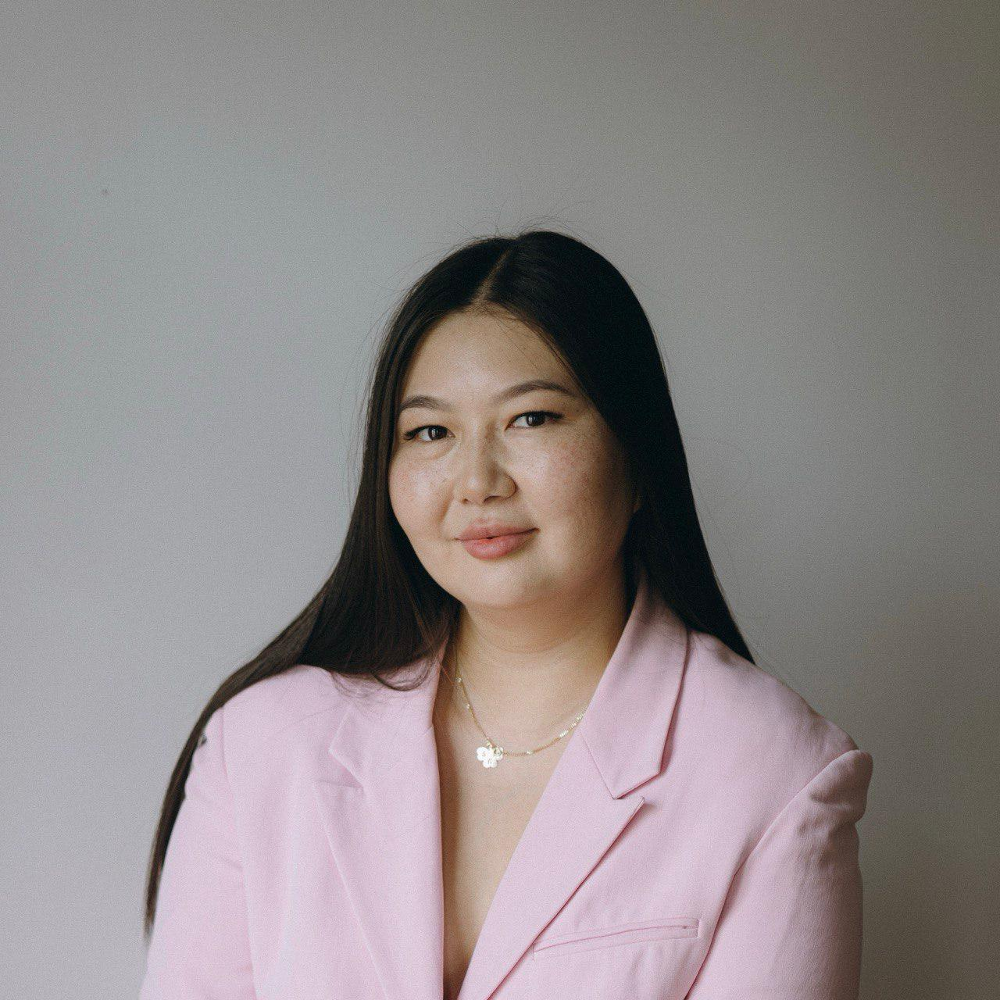

TIGAY
LEGAL
Юридическое сопровождение бизнеса, иностранных инвесторов и международных проектов в Узбекистане.
Legal support for businesses, foreign investors and international projects in Uzbekistan.
лет практикиyears of practice
рабочие языкиworking languages
юрисдикцияjurisdiction

Практичные юридические решения, ориентированные на бизнес.
Practical legal solutions focused on business needs.
О себеAbout
Более 9 лет сопровождаю деятельность бизнеса в Узбекистане. Специализируюсь на корпоративном праве, договорной работе, сопровождении иностранных инвесторов и комплексной юридической поддержке компаний.
I have been supporting business operations in Uzbekistan for more than 9 years, with a focus on corporate law, contract work, foreign investor support and comprehensive legal assistance for companies.
ПрактикаPractice Areas
Ключевые направления юридического сопровождения.
Key areas of legal support.
Корпоративное право
Corporate Law
- Регистрация и перерегистрация юридических лиц
- Registration and re-registration of legal entities
- Корпоративные изменения
- Corporate changes
- Локальная документация
- Internal documentation
Иностранный бизнес
Foreign Business
- Аккредитация представительств
- Accreditation of representative offices
- Сопровождение инвесторов
- Investor support
- Работа с госорганами
- Government relations
Договорная работа
Commercial Contracts
- Service / Agency / NDA
- Software / IP / Media
- Construction / EPC
Авторское право
Copyright & IP
- Договоры на создание изображений
- Image creation agreements
- Согласия физических лиц
- Individual consents
- Рекламные и digital-проекты
- Advertising and digital projects
Отрасли
Industries
- Construction · Energy · Retail
- IT · Manufacturing · Media
- Real Estate · Services
Связаться
Get in touch
+998 90 959 06 39
tigay.lyubov@gmail.com